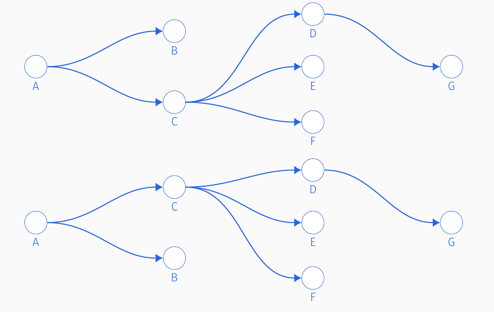

vignettes/not-built-vignettes/sampling-mc-trees.Rmd
sampling-mc-trees.RmdIn this vignette we will
Recap the properties of \(\mathcal{T}_C\), the sample space of permissible transmission trees in the base model.
Describe our algorithm of how to uniformly sample transmission trees \(T_C\).
Discuss the relationship between \(\mathcal{F}_C\), the sample space of permissible transmission trees in the multiple outside transmission model, and \(\mathcal{T}_C\).
Recall that \(\mathcal{T}_C\) is the space of permissible transmission trees in the base model that result in the cluster \(C\). These are all the unique transmission trees that
have \(|C|= n\) individuals
can be generated from our branching process model described in the model overview
Our transmission trees generated from our branching process are unique in that they are indexed by a generation-index ordered pair \((g,i)\). This is important because the indexing defines what is a unique transmission tree.
For example, consider the two transmission trees below, which have no indexing.

The only visual difference between these two transmission trees is that individuals ‘B’ and ‘C’ have swapped sapces. However, without indexing by both \(g\) and \(i\) we cannot distinguish between the two trees. We use indexing ordered pairs so we do not oversample ‘equivalent’ transmission trees.
Cayley’s formula says that the number of trees (not necessarily transmission trees) is \(n^{n-2}\). This number is a lower bound for us because our transmission trees are special because of their indexing and having exactly 1 individual in generation 1. The practical consequence is that the number of transmission trees is very large for \(n\) as small as 15 and is hence practically infeasible to enumerate all transmission trees in \(\mathcal{T}_C\). This is why we must sample from \(\mathcal{T}_C\).
We draw trees from \(\mathcal{T}_C\) in the following manner
Draw the number of generations \(g\)
Draw the generation sizes \(n_1, \dots, n_g\) and index the nodes
Draw the infector ID for each node
Draw a permutation of the covariate labels to the \(n\) nodes.
The number of generations \(g\) is (for \(|C|=n > 1\)) \[ Z ~ \sim Binomial(n-2, .5)\\ g \sim 2 + Z \] This variable \(g\) comes from counting the number of ways to put \(n-1\) indistinguishable individuals in \(g-1\) parts, recalling that one individual is reserved for the first generation. There are \(n-2 \choose g-2\) ways to do this according to the classic Stars and Bars combinatorial problem. So if we consider all the different ‘boxings’ for \(g=0, \dots, n-2\), then this is \(Z \sim Binomial(n-2, .5)\)
Conditioned on the number of generations \(g\), we would like to uniformly draw a \(g-tuple\) \((n_1, \dots, n_g)\) such that \(n_1=1\) and \(\sum_{i=1}^g n_i = n\).
To do this, we rely on the R packages partitions and RcppAlgos. The package partitions allows us to uniformly draw partitions \(n_1 = 1 \le n_2 \le \dots \le n_g\). We then have to uniquely ‘permute’ the partitions into the allowable set of \(g\)-tuples which require no such ordering. The package RcppAlgos allows us to ‘permute’ these partitions where we now consider the values of \(n_2, \dots n_g\) as tokens.
To help explain this better consider the following example with \(n= 7\) and \(g=4\).
The unique partitions are
(1, 2, 2, 2)
(1, 1, 2, 3)
(1, 1, 1, 4).
Then the permutations of partitions are
(1, 2, 2, 2)
(1, 1, 2, 3); (1, 1, 3, 2); (1, 2, 1, 3); (1, 2, 3, 1); (1, 3, 2, 1); (1, 3, 1, 2)
(1, 1, 1, 4); (1, 4, 1, 1); (1, 1, 4, 1).
Note that each of the partitions has a different number of permutations depending on how many times a generation size appears in the partition. This is the most computationally expensive step.
Once we have these generation sizes we index the nodes with the ordered pair \(g^*, i^*\).
The space of permissible trees, \(\mathcal{F}_C\) for the multiple outside transmissions (MOT) model is described more fully here. The MOT is formed by constructing a transmission tree of size \(|C|+1\) where the root node is reserved for a latent outsider.
This means for an observed cluster \(C\) with \(n\) individuals if we impute outside characteristics \(O\), then we have made a new cluster of size \(n+1\). We can then sample transmission trees from \(\mathcal{T}_{\{O\cup C\}}\) with one simple modification: we enforce the first node to have charateristics \(O\) and permute the observed characteristics to the remaining nodes.
The consequence is we can re-use much of the work in sampling from \(\mathcal{T}_C\) to sample from \(\mathcal{F}_C\).